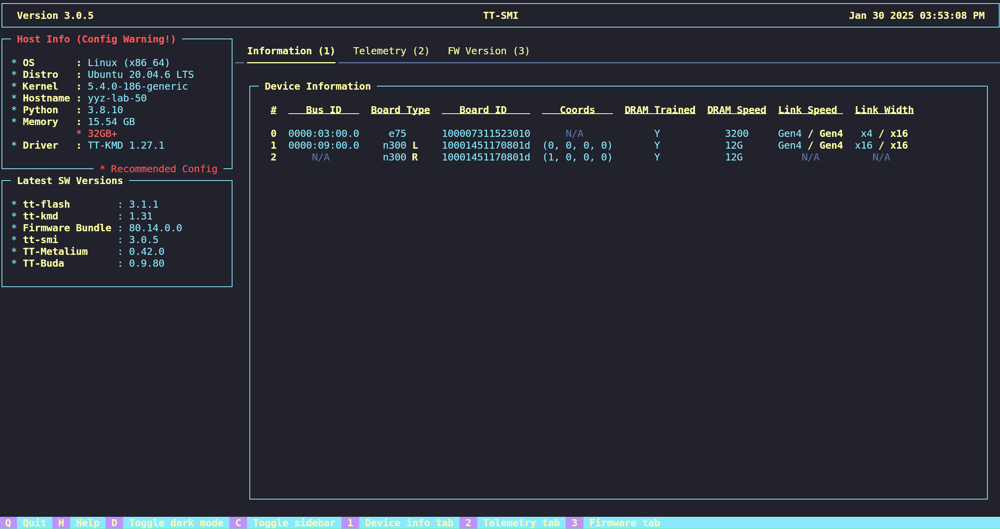

Manual Installation
Important! At this time, the recommended method for installing Tenstorrent software is tt-installer. If you would prefer to install software dependencies and configure your system manually, proceed with the instructions below. When you are done, return to the Quickstart Guide for next steps.
This Starting Guide will reference each software utility where the latest version is available. However, each SDK will have its own compatibility matrix associated with each release. It is strongly recommended to consult each SDK’s release compatibility matrix to ensure you are installing the correct versions of the system software packages.
Step 1: Install Software Dependencies
Install git, wget, pip, and DKMS (Dynamic Kernel Module Support) by running the following command in your terminal according to your Linux distribution:
Linux Distro |
Installation Command |
|---|---|
Debian, Ubuntu |
|
Fedora |
|
Enterprise Linux based |
|
*NOTE: Installation on non-Ubuntu distributions should be considered experimental at this time.*
Step 2: Install the Kernel-Mode Driver (TT-KMD)
Install the driver (TT-KMD) by running these commands in the terminal:
git clone https://github.com/tenstorrent/tt-kmd.git
cd tt-kmd
sudo dkms add .
sudo dkms install tenstorrent/1.34
sudo modprobe tenstorrent
Step 3: Device Firmware Update (TT-Flash / TT-Firmware)
The TT-Firmware file needs to be installed using the TT-Flash utility.
Install TT-Flash
To install TT-Flash, run this command in the terminal:
pip install git+https://github.com/tenstorrent/tt-flash.git
*NOTE: If you are not using a Python virtual environment (venv), you may see an error externally-managed-environment when installing via pip. To resolve this, create and/or activate a venv or use a tool like pipx.*
Update Device Firmware
⚠️ NOTE: Blackhole devices require firmware version 18.3.0 or newer.
To update Tenstorrent device firmware using TT-Flash, run these commands in the terminal:
wget https://github.com/tenstorrent/tt-firmware/releases/download/v18.4.0/fw_pack-18.4.0.fwbundle
tt-flash --fw-tar fw_pack-18.4.0.fwbundle
If this process worked, reboot the system and go to the next section.
If running that command results in an error that says the firmware is too old, enter the following command:
tt-flash --fw-tar fw_pack-18.4.0.fwbundle --force
Then reboot the system.
Step 4: Set Up HugePages
HugePages lets your system allocate dedicated memory to accelerate communication with Tenstorrent devices. Set up HugePages by running these commands in the terminal:
# Install `.deb`
wget https://github.com/tenstorrent/tt-system-tools/releases/download/v1.3.1/tenstorrent-tools_1.3.1_all.deb
sudo dpkg -i tenstorrent-tools_1.3.1_all.deb
# Start Services
sudo systemctl enable --now tenstorrent-hugepages.service
sudo systemctl enable --now 'dev-hugepages\x2d1G.mount'
# System Reboot
sudo reboot
*NOTE: This is a temporary solution for configuring hugepages. If the above fails, please check the latest available release from TT-System-Tools.*
Step 5: (Optional) Multi-Card Configuration (TT-Topology)
NOTE: TT-LoudBox and TT-QuietBox ship with their topology already configured. Use this application only if you have modified or are trying to modify the topology of your Wormhole-based TT-LoudBox or TT-QuietBox. If you are not doing so, skip this step. TT-Topology is provided as-is.
If you are running on a multi-card Wormhole system such as TT-LoudBox or TT-QuietBox, install the Tenstorrent Topology utility (**TT-Topology**) and configure a mesh topology by running these commands in the terminal:
pip install git+https://github.com/tenstorrent/tt-topology
tt-topology -l mesh
Step 6: Install the System Management Interface (TT-SMI)
Install the Tenstorrent Software Management Interface (TT-SMI) by entering this command in the terminal:
pip install git+https://github.com/tenstorrent/tt-smi
Step 7: Verify System Configuration and Test TT-SMI
Once your hardware and system software are installed, verify that your system has been configured properly by running the tt-smi utility.
You should see an interface like this one:

Within TT-SMI, you can see device information, telemetry, and firmware. If TT-SMI runs without errors, congratulations! You’re ready to use your Tenstorrent device. Take note of any host compatibility warnings.
If you are using a TT-QuietBox and have reboot issues while using TT-SMI, and you’ve recently updated/reset the BIOS, you will need to update a setting. In the BIOS, find the following setting:
Advanced -> AMD CBS -> NBIO Common Options -> PCIe Aer Reporting Mechanism
And change the setting to OS First.